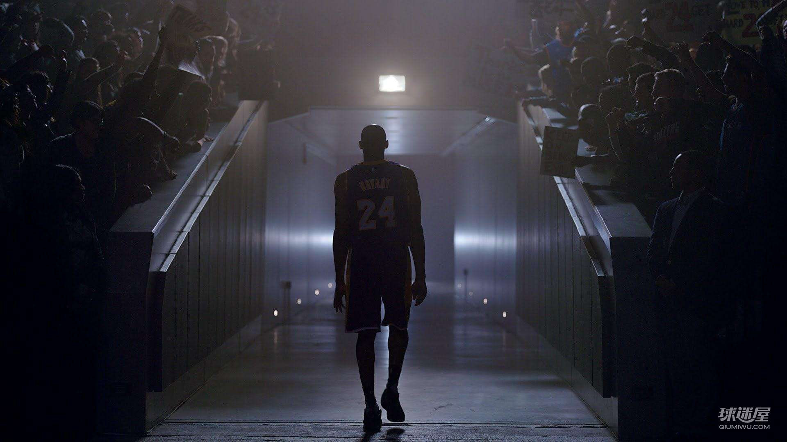

Kobe所获得的荣誉

- 奥运会冠军：1次（2008年北京奥运会）
- NBA总冠军：5次（2000，2001，2002，2009，2010）
- NBA西部冠军：7次（2000—2002，2004，2008—2010）
- NBA总决赛MVP：2次（2009，2010）
- NBA常规赛MVP：1次（2008）
- NBA全明星赛MVP：4次（2002，2007，2009－与沙奎尔·奥尼尔共享，2011）
- NBA全明星赛扣篮大赛冠军：1次（1997）
- NBA全明星：13次（1998，2000—2011）（注：1999年因为劳资纠纷，比赛没有举办 ；2010年达拉斯全明星赛因脚伤退出）
- NBA最佳阵容第一阵容：9次（2002，2003，2004，2006，2007，2008，2009，2010，2011）
- NBA最佳阵容第二阵容：2次（2000，2001）
- NBA最佳阵容第三阵容：2次（1999，2005）
- NBA最佳防守阵容第一阵容：9次（2000，2003，2004，2006，2007，2008，2009，2010，2011）
- NBA最佳防守阵容第二阵容：2次（2001，2002）
- NBA最佳新秀阵容第二阵容：1997
- NBA最受媒体欢迎第二队：2000
- NBA常规赛季得分总数第一：4次（2003：2461分[238]、2006：2832分、2007：2430分、2008：2323分[92]）『注：2003，2008年得分王的出场次数均比科比少』
- 1996-1997赛季NBA全明星新秀赛得分王：31分『注：阿伦·艾弗森获得MVP，19分』
- 2007年美洲男篮锦标赛冠军
- NBA现役50大球星：科比第一（由美国《Sporting News》评选）
- 2009年美国篮球杂志《SLAM》评出了新版50大巨星，乔丹高居第一，科比位居第12位。
- 2009年登上世界著名的时尚杂志《Vogue》的意大利男版10月刊封面
- 2009年年度冠军（Champion Of The Year）：（由《GQ》杂志评选）
- 2009年8月2日接受《高端访问》专访（CCTV新闻）
- 1995 阿迪达斯ABCD夏季训练营MVP
- 1996年麦当劳全美第一队
- 1996年全美年度最佳高中生：由美国《Today》和《Parade》杂志评选
- 1996年年度奈史密斯球员（Naismith Player of the Year） 1996年海滩球类经典赛（Beach Ball Classic）MOP（Most Outstanding Player）
- 1996年Gatorade Circle Of Champions年度最佳球员.
- 第一位在好莱坞格劳曼中国剧院以运动员身份留下足印及手印的明星.